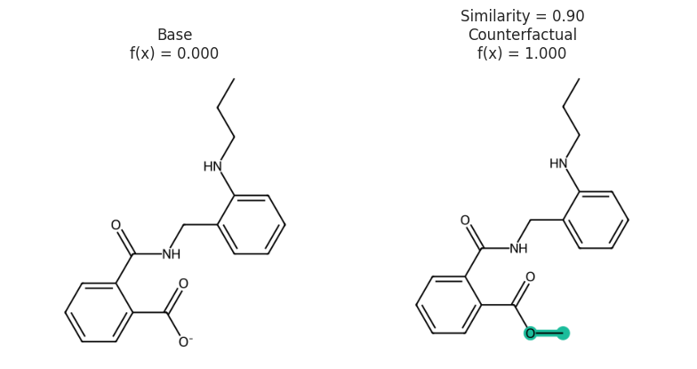

MMACE Paper: Counterfactual Example¶
Show code cell source
import pandas as pd
import matplotlib.pyplot as plt
import seaborn as sns
import matplotlib as mpl
import rdkit, rdkit.Chem, rdkit.Chem.Draw
from rdkit.Chem.Draw import IPythonConsole
import numpy as np
import mordred, mordred.descriptors
import exmol
from rdkit.Chem.Draw import rdDepictor
# rdDepictor.SetPreferCoordGen(True)
IPythonConsole.ipython_useSVG = True
sns.set_context("notebook")
sns.set_style(
"dark",
{
"xtick.bottom": True,
"ytick.left": True,
"xtick.color": "#666666",
"ytick.color": "#666666",
"axes.edgecolor": "#666666",
"axes.linewidth": 0.8,
"figure.dpi": 300,
},
)
color_cycle = ["#1BBC9B", "#F06060", "#F3B562", "#6e5687", "#5C4B51"]
mpl.rcParams["axes.prop_cycle"] = mpl.cycler(color=color_cycle)
s1 = "O=C([O-])C1=CC=CC=C1C(=O)NCC2=CC=CC=C2NCCC"
s2 = "O=C(OC)C1=CC=CC=C1C(=O)NCC2=CC=CC=C2NCCC"
e1 = exmol.Example(s1, "", 0, 0, 0, is_origin=True)
e2 = exmol.Example(s2, "", 0.9, 1.0, 1.0, label="Counterfactual")
fkw = {"figsize": (8, 6)}
font = {"family": "normal", "weight": "normal", "size": 22}
mpl.rc("axes", titlesize=12)
exmol.plot_cf([e1, e2], figure_kwargs=fkw, mol_size=(450, 400), nrows=1)
plt.tight_layout()
svg = exmol.insert_svg([e1, e2])
with open("counterfactual.svg", "w") as f:
f.write(svg)
